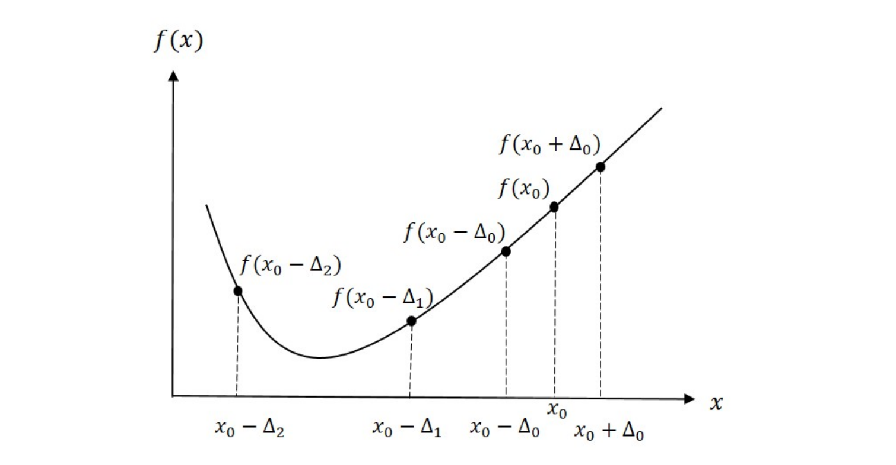

Learning Objectives
- Distinguish between local and global minima of a function.
- Explain why a bracket is required before many 1D optimization algorithms.
- Implement the bracketing algorithm using exponentially growing step sizes.
- Derive the golden ratio parameter \(\rho\) from the equal-efficiency condition.
- Execute the Golden Section Search (GSS) algorithm step by step.
- Implement bracketing and GSS as MATLAB user-defined functions (UDFs) that accept any function handle.
Notation used in this lesson
Maxima, Minima, and Why They Matter
The optimization problem
Optimization is the task of finding the value of \(x\) that minimizes (or maximizes) a function \(f(x)\). This appears throughout physics: finding the equilibrium separation of two atoms, minimizing the potential energy of a molecule, fitting a model to data, or training a machine learning algorithm all reduce to optimization.
The standard calculus approach — set \(f'(x) = 0\) and solve — works when \(f\) has a clean analytic form. In computational physics, however, \(f(x)\) is often the output of a simulation or numerical calculation. You can evaluate it at any point, but you cannot differentiate it analytically. Numerical optimization algorithms address exactly this situation.
Local vs. global minima
A local minimum is a point \(x^*\) where \(f(x^*) \leq f(x)\) for all \(x\) sufficiently close to \(x^*\). A global minimum is the point where \(f\) is smallest over its entire domain. Most real functions have many local minima but only one global minimum.
The algorithms in this lesson find a minimum, which may be local or global depending on where you start. For functions with a single minimum (unimodal functions), local and global are the same.
Unimodal functions
A function is unimodal on an interval \([a, b]\) if it has exactly one local minimum there. Both the bracketing algorithm and GSS assume unimodality. If your function has multiple minima you must either restrict the search domain or use a global strategy (e.g., running GSS from many starting points).
Bracketing a Minimum
What is a bracket?
A bracket is a triple of points \(a < b < c\) such that
Since the function goes down from \(a\) to \(b\) and then back up from \(b\) to \(c\), a unimodal function must have its minimum somewhere inside \([a, c]\). GSS and many other 1D algorithms require such a bracket as input.
The bracketing algorithm
Given an initial guess \(x_0\) and an initial step size \(\Delta_0\), evaluate \(f\) at \(x_0\) and at both neighbors \(x_0 \pm \Delta_0\):
- Check if already bracketed. If \(f(x_0) < f(x_0 - \Delta_0)\) and \(f(x_0) < f(x_0 + \Delta_0)\), then \([x_0 - \Delta_0,\; x_0 + \Delta_0]\) is a valid bracket. Done.
- Identify downhill direction. If \(f(x_0 - \Delta_0) < f(x_0)\), the minimum is to the left; otherwise it is to the right.
- Walk downhill with doubling steps. At each iteration \(k\), take a step of size \(\Delta_k = 2^k \Delta_0\) in the downhill direction.
- Stop when the function increases. Once \(f\) starts to increase after decreasing, the minimum lies between the last three evaluated points.

Figure 1 shows an example sequence for the bracketing algorithm. Two points are evaluated at \(x_0 \pm \Delta_0\). Since \(f(x_0 - \Delta_0) < f(x_0)\), the minimum is determined to be to the left of \(x_0\). On the next step, \(f(x_0 - \Delta_1) < f(x_0 - \Delta_0)\) and the algorithm continues downhill. Finally, we evaluate \(f(x_0 - \Delta_2) > f(x_0 - \Delta_1)\) and the algorithm stops. The results tell us that the minimum must be contained in the interval \((x_0 - \Delta_2,\; x_0 - \Delta_0)\).
Why exponentially growing steps?
Doubling the step at each iteration means we cover exponentially more distance while still making progress. If the minimum is far from \(x_0\), a fixed step size would require many iterations; doubling gets there quickly. The tradeoff is a larger bracket on exit, but GSS will tighten it efficiently.
Golden Section Search (GSS)
Core idea
Given a bracket \([a, b]\), evaluate \(f\) at two interior points and eliminate the portion of the interval that cannot contain the minimum. Repeat until the interval is narrower than the required tolerance \(\epsilon\).
Place the two interior points symmetrically:
where \(\rho < 1/2\). Then compare \(f(c)\) and \(f(d)\):
- If \(f(c) < f(d)\): minimum is in \([a, d]\). Discard \([d, b]\).
- If \(f(c) \geq f(d)\): minimum is in \([c, b]\). Discard \([a, c]\).
The interval shrinks by a factor of \((1 - \rho)\) each step.
Deriving \(\rho\): the equal-efficiency condition
We want to choose \(\rho\) so that after discarding one sub-interval, the surviving interior point automatically sits at the correct position for the next iteration — requiring only one new function evaluation per step.
Let \(L = b - a\) be the current interval width. The two interior points are \[ c = a + \rho L, \qquad d = a + (1-\rho)L. \] Suppose \(f(c) < f(d)\), so we discard \([d,\,b]\). The new interval is \([a,\,d]\) with width \[ L' = d - a = (1 - \rho)\,L. \]
Now look at what happens to the old point \(c\) inside the new interval \([a, d]\). In the next iteration we need two interior points placed at distance \(\rho L'\) from each end:
The old \(c = a + \rho L\) is already inside \([a,d]\). For it to serve as new \(d'\) (saving one evaluation), we need \[ a + \rho L \;=\; d - \rho L' \;=\; a + (1-\rho)L - \rho(1-\rho)L. \] Cancelling \(a\) and dividing by \(L\): \[ \rho = (1-\rho) - \rho(1-\rho) = (1-\rho)(1 - \rho) = (1-\rho)^2. \]
Expanding \((1-\rho)^2 = 1 - 2\rho + \rho^2\) and rearranging:
By symmetry, the same equation arises in Case 2 (when \(f(d) < f(c)\) and we discard \([a,c]\)) — the old \(d\) must become the new \(c'\) of the interval \([c, b]\), giving the identical constraint. So one value of \(\rho\) works for both cases.
The quadratic formula gives two roots; taking the one satisfying \(\rho < \tfrac{1}{2}\):
Note that \(1 - \rho = \tfrac{\sqrt{5}-1}{2} \approx 0.618\). Substituting back into \(\rho = (1-\rho)^2\) confirms the identity \(\tfrac{\sqrt{5}-1}{2}\bigl(\tfrac{\sqrt{5}-1}{2}\bigr) = \rho\) — this ratio is the defining property of the golden section. The interval shrinks by the factor \(1 - \rho \approx 0.618\) each step:
Full algorithm
- Given bracket \([a, b]\), set \(c = a + \rho(b-a)\) and \(d = b - \rho(b-a)\). Evaluate \(f(c)\) and \(f(d)\).
- If \(f(c) < f(d)\): set \(b \leftarrow d\), \(d \leftarrow c\), \(f_d \leftarrow f_c\), compute new \(c = a + \rho(b-a)\), evaluate \(f(c)\).
- Else: set \(a \leftarrow c\), \(c \leftarrow d\), \(f_c \leftarrow f_d\), compute new \(d = b - \rho(b-a)\), evaluate \(f(d)\).
- If \(b - a \leq \epsilon\), stop. Return \(\hat{x} = (a+b)/2\).
- Otherwise, go to step 2.
Limitation: GSS is 1D only
Unlike binary search for roots, there is no straightforward generalization of GSS to functions of more than one variable. For multidimensional optimization problems we need gradient-based methods, which are covered in Lesson 30.
Numerical Walkthrough — MATLAB
The code below hard-codes four iterations of GSS on \(f(x) = x^2 - 4\ln x\) (minimum at \(x^* = \sqrt{2} \approx 1.4142\)) without any loop or function. Each step is written out explicitly so you can see exactly which point is reused and which is newly evaluated. HW 29 asks you to implement the general-purpose UDFs for a different physical potential.
%% Lesson 29 — GSS: Hard-Coded 4-Step Example
% f(x) = x^2 - 4*ln(x), minimum at x* = sqrt(2) = 1.4142...
% Starting bracket: [1, 5]
f = @(x) x.^2 - 4.*log(x);
rho = (3 - sqrt(5)) / 2; % rho = 0.3820
%% Step 0: place two interior points (2 evaluations to start)
a0 = 1; b0 = 5;
c0 = a0 + rho*(b0 - a0); % c0 = 2.5279
d0 = b0 - rho*(b0 - a0); % d0 = 3.4721
fprintf('Init: [%.4f | %.4f %.4f | %.4f] f(c0)=%6.4f f(d0)=%6.4f\n', ...
a0, c0, d0, b0, f(c0), f(d0))
% f(c0) = 2.68 < f(d0) = 7.08 --> discard [d0, b0]
%% Step 1
% f(c0) < f(d0): new interval = [a0, d0]. c0 promoted to d (REUSED).
a1 = a0; b1 = d0; % new bracket: [1.0000, 3.4721]
d1 = c0; % c0 -> d1 no new evaluation
c1 = a1 + rho*(b1 - a1); % NEW evaluation c1 = 1.9443
fprintf('Step 1: [%.4f | %.4f %.4f | %.4f] f(c1)=%6.4f f(d1)=%6.4f\n', ...
a1, c1, d1, b1, f(c1), f(d1))
% f(c1) = 1.12 < f(d1) = 2.68 --> discard [d1, b1]
%% Step 2
% f(c1) < f(d1): new interval = [a1, d1]. c1 promoted to d (REUSED).
a2 = a1; b2 = d1; % new bracket: [1.0000, 2.5279]
d2 = c1; % c1 -> d2 no new evaluation
c2 = a2 + rho*(b2 - a2); % NEW evaluation c2 = 1.5836
fprintf('Step 2: [%.4f | %.4f %.4f | %.4f] f(c2)=%6.4f f(d2)=%6.4f\n', ...
a2, c2, d2, b2, f(c2), f(d2))
% f(c2) = 0.67 < f(d2) = 1.12 --> discard [d2, b2]
%% Step 3
% f(c2) < f(d2): new interval = [a2, d2]. c2 promoted to d (REUSED).
a3 = a2; b3 = d2; % new bracket: [1.0000, 1.9443]
d3 = c2; % c2 -> d3 no new evaluation
c3 = a3 + rho*(b3 - a3); % NEW evaluation c3 = 1.3607
fprintf('Step 3: [%.4f | %.4f %.4f | %.4f] f(c3)=%6.4f f(d3)=%6.4f\n', ...
a3, c3, d3, b3, f(c3), f(d3))
% f(c3) = 0.62 < f(d3) = 0.67 --> discard [d3, b3]
%% Step 4
% f(c3) < f(d3): new interval = [a3, d3]. c3 promoted to d (REUSED).
a4 = a3; b4 = d3; % new bracket: [1.0000, 1.5836]
d4 = c3; % c3 -> d4 no new evaluation
c4 = a4 + rho*(b4 - a4); % NEW evaluation c4 = 1.2229
fprintf('Step 4: [%.4f | %.4f %.4f | %.4f] f(c4)=%6.4f f(d4)=%6.4f\n', ...
a4, c4, d4, b4, f(c4), f(d4))
% f(c4) = 0.69 > f(d4) = 0.62 --> discard [a4, c4]
%% Result after 4 steps
% f(c4) > f(d4): final bracket = [c4, b4]
a_fin = c4; b_fin = b4; % final bracket: [1.2229, 1.5836]
xstar = (a_fin + b_fin) / 2; % midpoint estimate
fprintf('\nFinal bracket: [%.4f, %.4f] midpoint = %.4f\n', a_fin, b_fin, xstar)
fprintf('True x* = sqrt(2) = %.4f error = %.4f\n', sqrt(2), abs(xstar - sqrt(2)))
%% ── Plots ─────────────────────────────────────────────────────────────────
figure('Position', [100 100 1100 440])
% Color palette: one color per step 0-4
clr = [0.55 0.55 0.55; % gray step 0 (init)
0.00 0.45 0.74; % blue step 1
0.85 0.33 0.10; % orange step 2
0.47 0.67 0.19; % green step 3
0.49 0.18 0.56]; % purple step 4
%% Panel 1: function + every evaluation point + shrinking bracket
subplot(1,2,1)
xp = linspace(0.7, 5.3, 500);
plot(xp, f(xp), 'b-', 'LineWidth', 2, 'HandleVisibility', 'off'); hold on
ylim([-2.2 8.5]); xlim([0.5 6.2])
yline(0, 'k-', 'LineWidth', 0.5, 'HandleVisibility', 'off')
% True minimum: vertical dotted line + marker
xline(sqrt(2), 'r:', 'LineWidth', 1.5, 'HandleVisibility', 'off')
plot(sqrt(2), f(sqrt(2)), 'rp', 'MarkerSize', 16, 'MarkerFaceColor', 'r', ...
'DisplayName', 'True $x^* = \sqrt{2}$')
% Initial bracket endpoints a0 = 1 and b0 = 5
plot(a0, f(a0), 'k^', 'MarkerSize', 10, 'MarkerFaceColor', 'k', ...
'DisplayName', 'Bracket endpoints $(a_0,\,b_0)$')
plot(b0, f(b0), 'k^', 'MarkerSize', 10, 'MarkerFaceColor', 'k', ...
'HandleVisibility', 'off')
% All evaluation points on the curve, color-coded by step
% Step 0: two points (c0, d0); steps 1-4: one new point each (c1-c4)
eval_x = [c0 d0 c1 c2 c3 c4 ];
eval_ci = [ 1 1 2 3 4 5 ]; % index into clr
eval_mk = {'o', 'o', 's', 's', 's', 's'};
eval_lb = {'Init $(c_0,d_0)$', '', 'Step 1 $(c_1)$', ...
'Step 2 $(c_2)$', 'Step 3 $(c_3)$', 'Step 4 $(c_4)$'};
for k = 1:6
hv = 'on'; if k == 2, hv = 'off'; end % d0 shares legend entry
plot(eval_x(k), f(eval_x(k)), eval_mk{k}, 'MarkerSize', 9, ...
'Color', clr(eval_ci(k),:), 'MarkerFaceColor', clr(eval_ci(k),:), ...
'DisplayName', eval_lb{k}, 'HandleVisibility', hv)
end
% Shrinking brackets shown as horizontal spans below y = 0
brk_a = [a0 a1 a2 a3 a_fin];
brk_b = [b0 b1 b2 b3 b_fin];
blbl = {'[1.00, 5.00]', '[1.00, 3.47]', '[1.00, 2.53]', ...
'[1.00, 1.94]', '[1.22, 1.58]'};
yb = linspace(-0.45, -1.90, 5);
for k = 1:5
c = clr(k,:); yk = yb(k);
plot([brk_a(k) brk_b(k)], [yk yk], '-', 'Color', c, 'LineWidth', 3, ...
'HandleVisibility', 'off')
plot(brk_a(k)*[1 1], yk + [-0.13 0.13], '-', 'Color', c, 'LineWidth', 2, ...
'HandleVisibility', 'off')
plot(brk_b(k)*[1 1], yk + [-0.13 0.13], '-', 'Color', c, 'LineWidth', 2, ...
'HandleVisibility', 'off')
text(brk_b(k) + 0.08, yk, blbl{k}, 'Color', c, 'FontSize', 8, ...
'VerticalAlignment', 'middle')
end
xlabel('x'); ylabel('$f(x)$', 'Interpreter', 'latex')
title('$f(x) = x^2 - 4\ln(x)$: each GSS step', 'Interpreter', 'latex')
legend('Location', 'northeast', 'Interpreter', 'latex')
grid on
%% Panel 2: bracket width vs iteration (semilog)
subplot(1,2,2)
widths = [b0-a0, b1-a1, b2-a2, b3-a3, b_fin-a_fin];
iters = 0:4;
semilogy(iters, widths, 'ko-', 'LineWidth', 1.8, 'MarkerFaceColor', 'k')
hold on
semilogy(iters, widths(1)*0.618.^iters, 'r--', 'LineWidth', 1.4)
xlabel('Iteration'); ylabel('Bracket width $(b-a)$', 'Interpreter', 'latex')
title('Convergence: width $\times\,0.618$ per step', 'Interpreter', 'latex')
legend({'Actual', '$0.618^k \cdot L_0$'}, 'Interpreter', 'latex', 'Location', 'northeast')
grid on
sgtitle('GSS on $f(x) = x^2 - 4\ln(x)$, bracket $[1,\,5]$', 'Interpreter', 'latex')
Summary
| Concept | Key Idea |
|---|---|
| Local vs. global minimum | Local: lowest nearby. Global: lowest overall. GSS finds a local minimum. |
| Unimodal | Exactly one local minimum in the search interval — required assumption for GSS. |
| Bracket | Triple \(a < b < c\) with \(f(b) < f(a)\) and \(f(b) < f(c)\); guarantees minimum is in \([a,c]\). |
| Bracketing step size | \(\Delta_k = 2^k \Delta_0\); take larger and larger steps until minimum is passed. |
| GSS parameter \(\rho\) | \((3-\sqrt{5})/2 \approx 0.382\); derived from equal-efficiency condition. |
| GSS convergence rate | Interval shrinks by factor \(\approx 0.618\) per step; one new eval per step after startup. |
| Limitation | GSS is 1D only. Multidimensional functions require gradient-based methods (Lesson 30). |
References
- Newman, M. Computational Physics, 1st Ed., Self Published, 2012, §6.4 (pp. 278–283).
- Chong, E.K.P. and Zak, S.H. An Introduction to Optimization, 4th Ed., John Wiley & Sons, 2013, §7.2 (pp. 104–108).
- Pellizzari, C.A. Physics 356 — Supplement on Bracketing, USAFA, 2021.